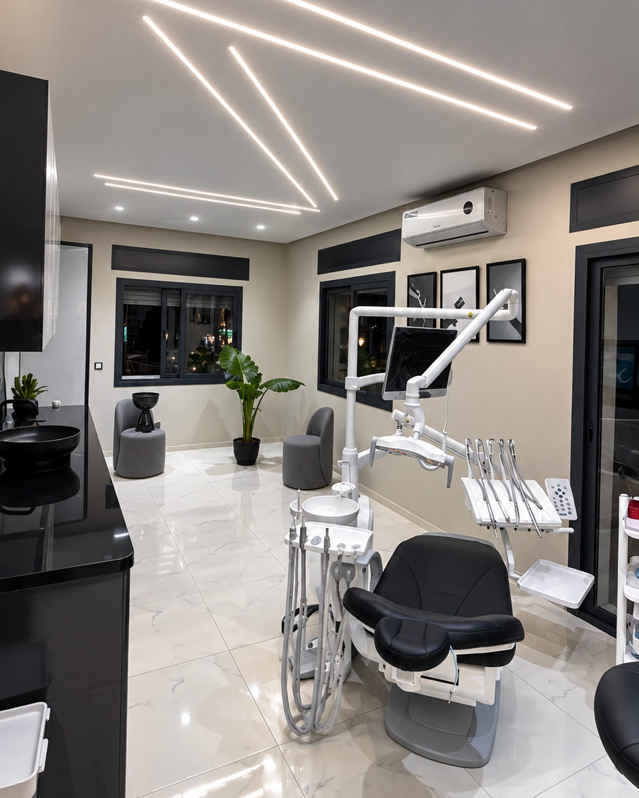
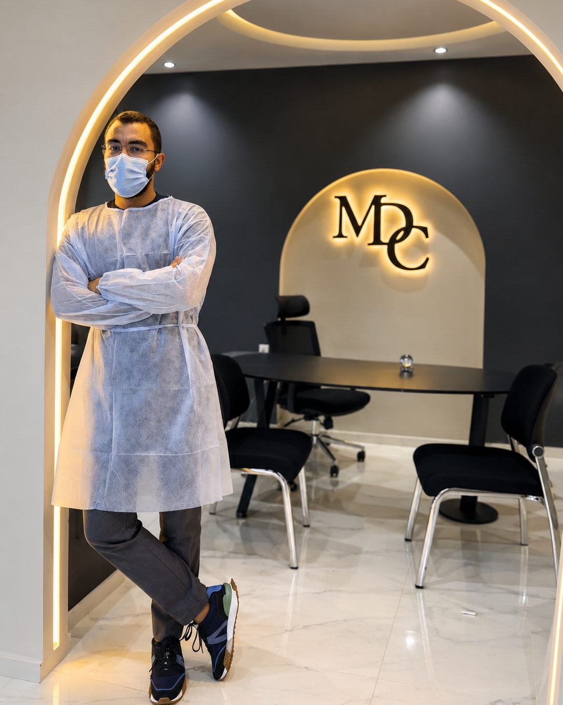

Votre dentiste à Tétouan, avenue Oujda.
Soins, implantologie, esthétique et radiologie panoramique dans un cabinet neuf, calme et entièrement équipé. Le Dr Zeguendry et son équipe vous reçoivent du lundi au samedi.

Quatre spécialités, sous le même toit.
Du détartrage à l’implant, tout se fait ici — y compris la radiologie, ce qui vous évite un déplacement et une semaine d’attente entre le cliché et le diagnostic.
Un cabinet neuf, pensé pour qu’on s’y sente bien.
Le centre a été conçu d’un seul tenant : fauteuils récents, salle de stérilisation dédiée, radiologie intégrée. La salle d’attente donne sur l’avenue et reste calme — pas de couloir, pas de file d’attente debout.
C’est un détail, mais c’est le premier que l’on remarque quand on a peur du dentiste : l’endroit est clair, silencieux, et on sait où l’on va.

Radiologie sur place
Panoramique et rétro-alvéolaire. Le cliché est lu pendant la consultation.
Stérilisation tracée
Instruments sous sachet, autoclave, un cycle documenté par série.
Français et arabe
L’équipe reçoit dans les deux langues, à l’accueil comme au fauteuil.
Avenue Oujda
4 rue A, avenue Oujda. Le cabinet est au premier étage.
Le Dr Zeguendry
Chirurgien-dentiste, le Dr Zeguendry dirige le Centre Dentaire Majorelle à Tétouan. Sa façon de travailler tient en une phrase : expliquer avant de faire.
Concrètement, vous savez ce qui va être fait, pourquoi, combien de séances cela demande et ce que cela coûte — avant que le premier instrument ne soit sorti.
Un patient qui comprend ce qu’on lui fait a beaucoup moins peur. C’est la moitié du travail.

À Tétouan, et aux alentours.
Le cabinet reçoit des patients de Tétouan et de toute la côte : Martil, M’diq, Fnideq, Cabo Negro, Oued Laou. Si vous venez de loin, dites-le en appelant — on regroupe les soins sur une même journée quand c’est possible.

Les questions qu’on nous pose.
Faut-il prendre rendez-vous ?
Oui, de préférence. Appelez le 06 68 64 14 89 : on vous propose un créneau, en général dans la semaine. Si vous avez une douleur aiguë, dites-le tout de suite — des créneaux d’urgence sont gardés libres chaque jour.
Combien coûte une consultation ?
Le tarif de la première consultation vous est annoncé au téléphone, avant votre venue. Pour un implant, une facette ou une prothèse, vous recevez un devis écrit après le bilan radiologique : rien n’est engagé tant que vous ne l’avez pas accepté.
Est-ce que je peux me faire rembourser ?
Une feuille de soins détaillée vous est remise à la fin du traitement, à présenter à votre organisme (CNSS, CNOPS, mutuelle ou assurance privée). Appelez-nous pour connaître les modalités exactes selon votre couverture.
J’ai très peur du dentiste.
Dites-le en arrivant, c’est beaucoup plus fréquent qu’on ne le croit. Chaque geste est expliqué avant d’être fait et l’anesthésie locale est posée progressivement. Une première séance peut se limiter à un examen et une radio, sans aucun soin.
Recevez-vous les enfants ?
Oui. Pour une première visite, prévoyez un rendez-vous court en début de journée : l’enfant découvre le fauteuil, on compte les dents, et on s’arrête là. La confiance se construit à cette séance-là.